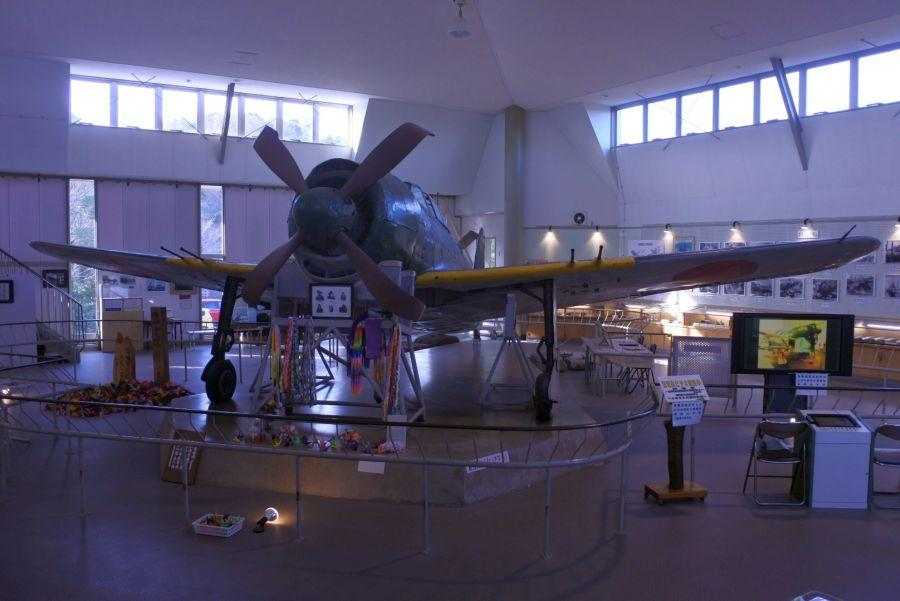
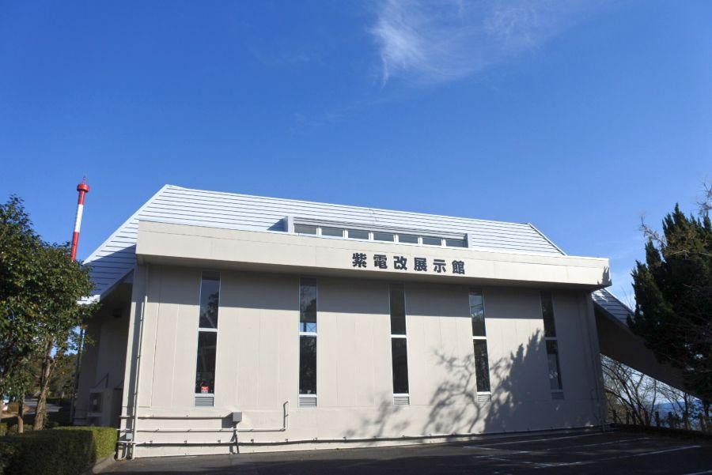
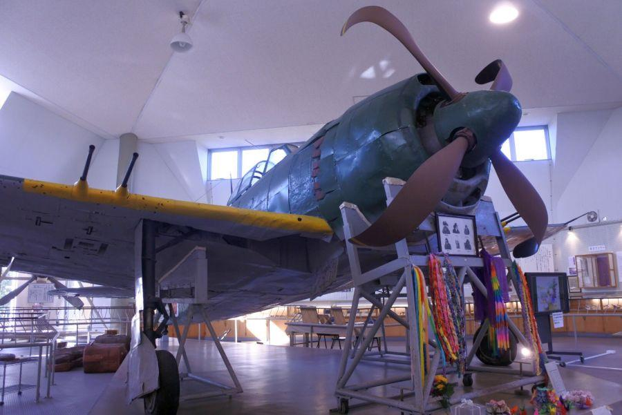
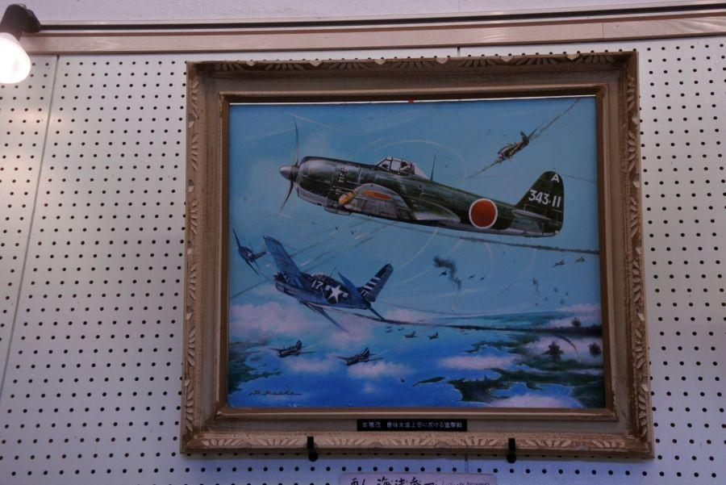
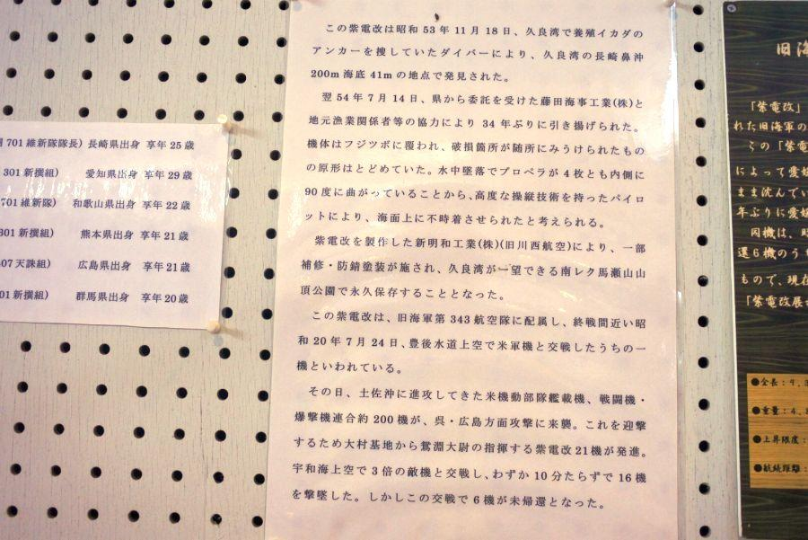
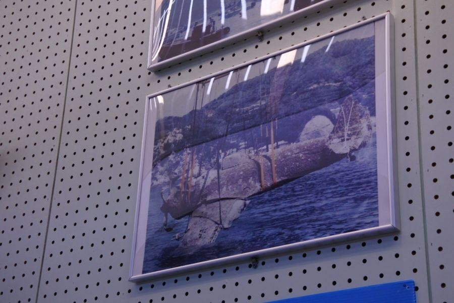
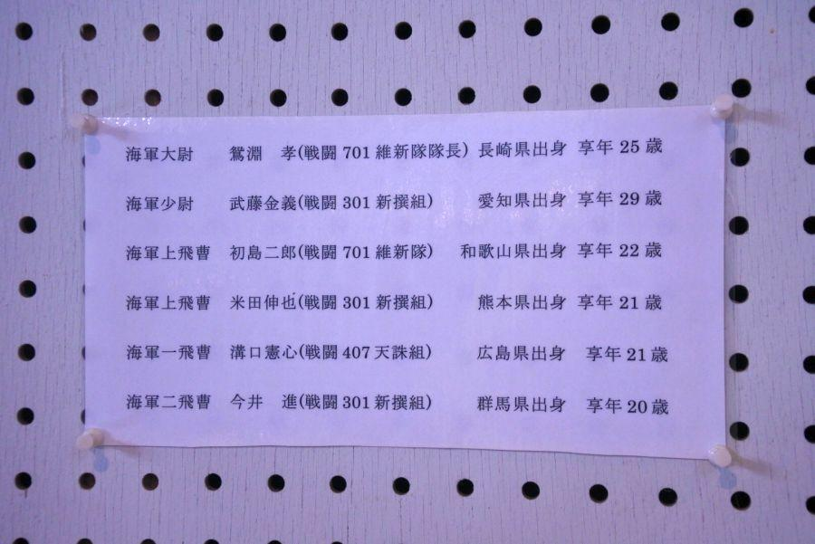
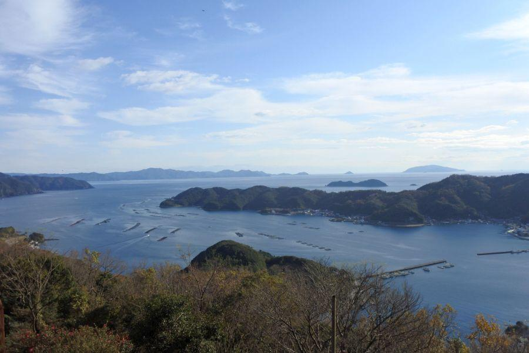

日本で唯一現存する紫電改。平和へのメッセージ < 紫電改 / 愛媛県愛南町>

日本で唯一。
この場所にだけ現存する 旧海軍の局地戦闘機・紫電改(しでんかい)。
第二次世界大戦末期。源田實大佐率いる第三四三海軍航空隊(三四三空)を中心に、日本本土迎撃戦において 輝かしい戦果を残した機体は、今静かに羽根を休めています。
紫電改について

紫電改展示館(しでんかいてんじかん / 愛媛県愛南町)
愛媛県南部・南予地方に広がる 南予レクリエーション都市(通称・南レク)馬瀬山公園内に、この機体は納められています。

紫電改(しでんかい)
川西航空機(現・新明和工業)によって作られた、大戦末期の海軍所属の局地戦闘機。終戦までに415機が生産された。
「局地戦闘機(きょくちせんとうき)」とは、旧日本海軍による 戦闘機の分類の一つ。自国の領土を敵戦闘機・爆撃機の攻撃から守るために、陸上の飛行場から発進する飛行機の事。
特徴としては、
スクランブル発進(緊急出動)に対応したり、素早く高高度へ到達するために 軽量機体に強力なエンジン搭載。
相手に確実にダメージを与えるための 強力な武装を行っている。
反面、軽量を実現するため航続距離が短い(＝燃料タンクが小さい)。これは迎撃を主目的としているためである。
展示機の大きな特徴である 大きく反った四翅(よんし)のプロペラは、着水時の衝撃で曲がったもの。
この紫電改は近くの海に沈んでいるところを引き揚げられたものだが 奇跡的に原型をほぼ留めており、最低限の補修を行った上で展示されている。
豊後水道上空戦の後に...

昭和20年7月14日、呉軍港空襲のために飛来した米軍機200機相手に四国/九州を隔てる豊後水道上空で会戦。
長崎県の大村基地から飛び立った三四三空は、僅か20機で戦いを挑み 米艦載機16機の撃墜を報告したが、この戦闘で6機が未帰還となった。
そのうちの1機がこの機体と見られる。

機体の何らかの不調により パイロットは戦闘から離脱。波の穏やかな久良湾(ひさよしわん)に洋上着水を行った様子。
目撃者によると 非常にスムーズに着水したが、程なくして機体が沈んでしまったという。
このことが 久良湾には戦闘機が沈んでいるという噂が残され、後年の発見に繋がった。
操縦していたパイロットは...？

事実 ほぼ無傷の状態で引き揚げられているので、戦闘による被弾などで墜落したものではない。また、相当敏腕のパイロットが操縦していたことが推察される。

そのパイロットとは？
当日 未帰還となったのはこちらの六名。その誰かまでは特定できていないが、引き揚げられた紫電改の搭乗席にあるフットバーの位置が一番手前に設定されていたことから、パイロットの身長は高くない。
とすると 体格面から考えられる搭乗者は、
武藤金義中尉(戦死後昇進) か 米田伸也飛曹
・
・
・
とは言え、搭乗者が特定できる決定的な証拠は見つかっておらず、遺族はこの六名共通の遺品としている。
平和へのメッセージ

紫電改展示館がある 南レク馬瀬山公園から眺める久良湾。
この場所からは高知県の宿毛や、離島の沖ノ島・鵜来島。天気が良い時には 九州まで見渡すことができる。
今、心穏やかに この景色を眺めることができるのは、国や家族を守るために、青春時代や命までも捧げた先人たちのおかげです。
この紫電改は 平和の尊さを誰よりも知る戦争の証人として、この場所からメッセージを発信し続けています。
< 自家用車 >
高松駅から 約4時間、280km
松山空港から 約2時間10分、130km
※ 主な地点からの最速・最短距離
関連記事
2018,3/25 かつての海軍飛行場に残る掩体壕群 < 松山空港周辺 / 愛媛県松山市 >
2018,3/31 敏腕パイロットたちの聖地となった松山 < 第三四三海軍航空隊 / 愛媛県松山市 >